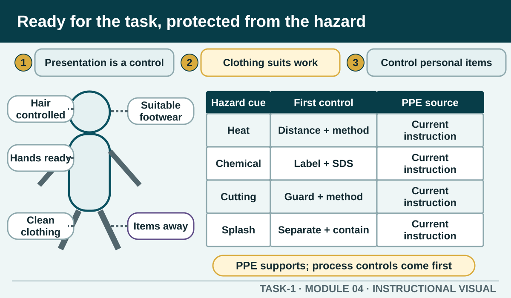

Prior learning
Recall the previous lesson and bring forward one question or completed learning artefact.
Task 1 · Lesson 4 of 16
Prepare for kitchen work through hygienic personal presentation and choose, inspect and use personal protective equipment that matches the identified task hazard.
Prior learning
Recall the previous lesson and bring forward one question or completed learning artefact.
Success criteria
Learning boundary
This lesson supports preparation and formative practice. The current authorised package and trainer/assessor control formal products, observations, dates and submission.

Professional kitchen presentation helps control contamination, movement and exposure. The required clean uniform, controlled hair, enclosed non-slip footwear and managed jewellery and nails reduce the chance that clothing, hair or personal items enter food or become caught, dropped or contaminated during work.
Presentation requirements come from the authorised workplace or school procedure. This module explains their purpose without prescribing a particular uniform style. Arrive ready before entering the food-preparation workflow rather than adjusting hair, jewellery or clothing over exposed food.
Kitchen clothing should be clean, in suitable condition and worn as directed. Loose or damaged items may catch on handles, equipment or hot surfaces. An apron or outer layer that becomes heavily soiled can transfer contamination and must be changed through the authorised process.
Footwear should provide the required coverage, stability and grip for a wet, hard and busy work environment. Suitable footwear supports the control system but does not make a wet floor safe; spills and obstructions still need to be managed promptly.
Hair must be controlled so it does not fall into food, contact equipment or require repeated touching. Nails and jewellery are managed according to the procedure because they can trap contamination, damage gloves or become physical hazards. Personal items such as phones should remain outside the active food zone unless an authorised task requires them and a hygiene control is in place.
If you touch your hair, face, clothing or a personal item during preparation, treat it as a possible contamination event. Stop and restore hand or glove hygiene before returning to food.
PPE is selected after the hazard and task are understood. Heat, chemicals, cutting, splash or another exposure may require different materials and designs. Check the product label, Safety Data Sheet, equipment information, training and workplace procedure rather than assuming one glove or apron suits every job.
PPE is the last protective layer around the person, not a substitute for removing a hazard, guarding equipment, separating work or following the correct process. Use it with the full control system.
Before use, check that the PPE is the correct type, clean or ready as required, undamaged and able to fit securely without restricting safe movement or visibility. Follow the demonstrated method for putting it on, using it, removing it and preventing contaminated surfaces from contacting skin, clothing or food.
Stop and report missing, damaged or unsuitable PPE. Do not modify equipment or combine items in a way that creates a new hazard. If the PPE interferes with the task, the responsible person must review the method rather than the learner simply removing it.
A worker who was ready at the start may need to reset during work. Replace contaminated outerwear or gloves as directed, wash hands after touching personal items, secure hair again if it comes loose and report PPE damage immediately.
Include a quick self-check when changing task or zone: Am I still presented for this work? Has my clothing or PPE contacted a contamination source? Does the next task require different protection? This makes readiness an active control rather than a one-time inspection.
Formative practice
Each option explains the workplace consequence. These responses save on this device.
Written application
Use observable facts, explain the consequence and keep local assessment or procedure details with the authorised source.
Self-checkApply and keep evidence
Choose when to prepare, stop, report or seek an authorised PPE direction.
Use the check result, activity record and written response as formative learning evidence only. Formal evidence remains controlled by the current package and trainer/assessor.
Authorised source note: Source basis: authorised Cycle 1 uniform, presentation, PPE and chemical-safety learning. The exact school uniform, permitted jewellery, footwear specifications and task PPE remain Teacher to confirm.